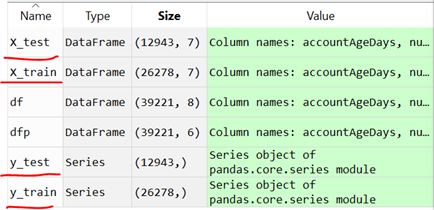

Now, we can divide the dataset into training and test sets:
from sklearn.model_selection import train_test_split
X_train, X_test, y_train, y_test = train_test_split(df.drop('label', axis=1), df['label'], test_size=0.33, random_state=17)
The sklearn.model_selection.train_test_split() function helps us split our dataset into training and test sets. Notice that in the first argument to the function, we passed in df.drop('label', axis=1). This will be split into X_train and X_test to the ratio of 0.67:0.33 because we passed in test_size=0.33, which means that we want two-thirds of the dataset to be used for training the machine learning algorithm, and the remaining third, the test set, to be used to see how well the algorithm performs. We are dropping the label column from X before splitting it into X_train and X_test, and passing in the label column as y—df['label']. The labels will then be split in the same ratio into y_train and y_test.
You can see the train and test dataset as below:
